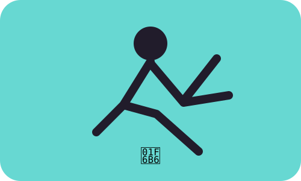

MODULE 03 · 05
🚶 Movimiento

SUBSECCIÓN
Pantalla + cuerpo
Pasar mucho tiempo sentado frente a pantallas puede reducir las oportunidades de movimiento. La actividad física regular se asocia con beneficios para la salud y el bienestar de estudiantes universitarios.
Fuente / respaldo
Systematic review evidence on physical activity and screen time in university students (2026).
Systematic review evidence on physical activity and screen time in university students (2026).
¿Cuánto puedes moverte hoy?
50%
🟡 Ruido medio
Usa el control como compromiso personal, no como una calificación.